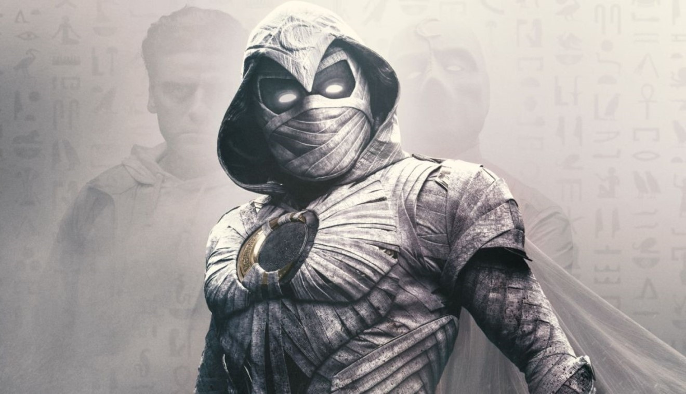

| Menú / Comics / Estrenos / Info |
|---|
Todas las novedades del UCM
Si repasamos todo lo que ha ocurrido en el Universo Cinematográfico de Marvel, lo tiene complicado.
Ya se ha estrenado la película Thor: Love and Thunder y aunque ha obtenido una gran recaudación en su primer fin de semana superando los 303 millones de dólares en todo el mundo, ha recibido críticas que no son tan buenas como otras entregas del UCM.
Así que si repasamos los antecedentes, podría significar que Taika Waititit no repetirá en Thor 5. Aunque obviamente la última palabra la tiene Kevin Feige, jefe de Marvel Studios.
Existe una curiosidad en lo que respecta a la puntuación que reciben las películas de Marvel en Rotten Tomatoes, ya que los directores que han obtenido menos de un 80% han dejado la franquicia. Hay que recordar que Taika Waititi ha obtenido un 67%, así que estaría sentenciado y no podría hacer Thor 5.

La co-creadora del personaje de Kamala Khan / Ms. Marvel dice que hay mucha ira entre los que quieren rebajar la serie de Disney Plus.El review bombing y el cyberbullying se han vuelto constantes entre los grandes fandoms, y Marvel no es la excepción. Desde 2019 vimos cómo Capitana Marvel - valoración - 60% recibía comentarios de odio de personas que no habían visto la película, y en este 2022 la historia se repitió con Ms. Marvel - valoración - 100%, un personaje que está relacionado con Capitana Marvel y además es la primera superheroína musulmana del Universo Cinematográfico de Marvel
Sana Amanat, co-creadora del personaje, habló recientemente en entrevista con NBC acerca del odio que ha recibido la serie basada en su cómic. Estas fueron sus palabras al respecto:
"Creo que "las críticas" provienen de un lugar de ira y una sensación de que sus identidades están siendo amenazadas. Si no pueden conectarse con ella, está bien. Solo desearía que no intentaran destruirla. Es asombroso ver cómo están internalizando esas imágenes. Solo espero que les dé una sensación de competencia que, francamente, no tuve cuando crecía, y una sensación de conexión dentro de su cultura y quiénes son porque creo que eso es increíblemente importante."